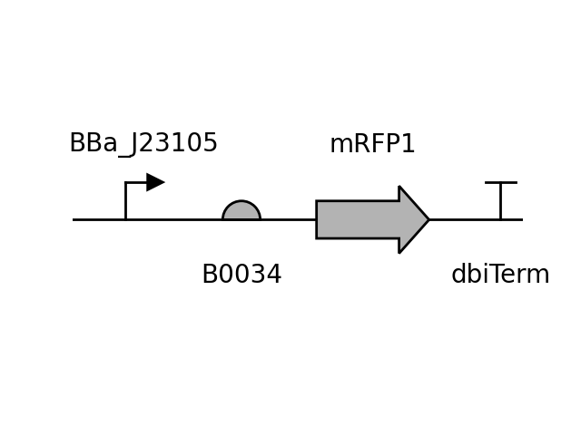

Anderson Promoter (medium)
BBa_J23105
This part belongs to:
Type:
Constitutive PromotersFunction:
HardwirePublication:
RegistryofStandardBiologicalParts2021Data
| Parameter | Value | Unit |
|---|---|---|
| Strength | 0.24 | RPU |
| Strain | TG1 |
|---|---|
| Plasmid | BBa_J61002 |
| ori | p15A |
| Resistance | Amp |
Circuit Context
(better resolution)
Description
Part of the widely-used Anderson promoters collection, characterized by Prof. Christopher Anderson and the 2006 Berkley iGEM team, which derived 20 promoters from mutating BBaJ23119.
The data used here was taken directly from the iGEM repository, although it lacks in detail when disclosing measurement/culture conditions.
These promoters lead to constitutive σ70-assocciated gene expression.
Characterization
The Registry web page only states the host cells (E. coli TG1) was grown on LB media to saturation. All measurements were normilized by the activity of BBa_J23100.
Sequences
Promoter
tttacggctagctcagtcctaggtactatgctagc